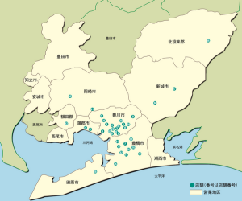

VISION
想い
あなたの毎日に寄り添い、
そっと力になれる存在でありたい。
地域の暮らしを見つめ、安心感を届け続けます。
そばにいる だから 頼りになる。
オープン・カンパニー
受付中！
ENTRY
JOBS
仕事
人と信頼をつなぐ、地域の“顔”になる
渉外業務は、ただ金融商品を提案する仕事ではありません。 地域の企業やご家庭を訪問しながら、困りごとや夢を一緒に考え、解決していく仕事です。
お客様と会話する中で、「あなたがいてくれてよかった」 そんな言葉をもらえる瞬間が、この仕事の一番のやりがいです。
人とのつながりで結果をつくる。 地域の人に信頼される“頼れる存在”として成長していけます。
笑顔がつながる、安心をまもる仕事
預金業務は、日々の暮らしや将来の夢に寄り添いながら、 お客様の大切な資産をお預かりし、安心を届ける仕事です。
お客様といちばん近くで関わるお仕事。 日々の「こんにちは」や「ありがとう」の積み重ねが、 地域との信頼を育てていきます。
会話を通してお客様の気持ちに寄り添うことが、 この仕事のいちばんの魅力です。
夢をかたちにする、挑戦のパートナー
お客様の夢や挑戦を、金融の力でサポートするのが融資業務。 家を建てたい、事業を大きくしたい—— そんな想いに寄り添い、実現まで伴走します。
“人”に向き合うからこそ感じるやりがいがある。 地域の前向きなエネルギーを、 そっと後押しするのが私たちの仕事です。


SUPPORT
未来を育てる制度
自己啓発支援の推進
当金庫では通信講座、eラーニングも充実しており学べる環境を提供して意欲ある職員を積極的にサポートしています。
また金庫で定められた公的資格等を取得した職員には奨励金の支給、
昇格要件資格を早期に満たした職員には、昇格までの期間、資格取得手当を支給して職員のサポートをしています。
各種研修
新入職員には「新入職員研修会」、「新入職員フォロー研修」、「新入職能研修」などを実施しています。 その他にも、階層・職能別研修、外部派遣研修など階層や担当係に応じた各種研修を実施しています。 座学だけでなく現場で学ぶ工場見学研修や渉外活動スタートアップ研修などもあります。
Scroll >
選考STEP
エントリー
会社説明会
面接
適性検査
筆記試験
内々定
NUMBERS
数字でわかる働き方
地域と共に、
築いてきた歴史と信頼
| 設立年 |
|---|
|
1937 年 |
| 店舗数 |
|---|
|
36 店舗 (2025年3月末現在) |
| 役職員数 |
|---|
|
542 名 (2025年3月末現在) |
「長く働きたい」
と思える環境
| 平均勤続年数 |
|---|
|
15.8 年 (2024年度実績) |
| 月平均残業時間 |
|---|
|
2.5 時間 (2024年度実績) |
| 平均有給休暇取得日数 |
|---|
|
13.4 日 (2024年度実績) |
多様な人が安心して
働ける職場を目指して
| 職員の男女比 |
|---|
|
50 : 50 (2024年度実績) |
| 育児休業取得率 |
|---|
|
100 % (2024年度実績) |
| 管理職の女性割合 |
|---|
|
10.0 % (2024年度実績) |
RECRUITMENT
採用情報
募集要項
| 採用学科 | 全学部全学科 |
|---|---|
| 採用人数 | 大学卒、短大卒 （未定） |
| 採用職種 | 総合職・一般職 |
待遇と勤務
| 初任給 |
大学卒：250,000円 短大卒：212,000円 (2025年4月実績) |
|---|---|
| 諸手当 | 通勤手当、子育て支援手当、職務手当ほか |
| 昇給 | 年1回（4月） |
| 賞与 | 年3回（6月・12月・3月）※3月は原則、総合職選択者 |
| 勤務地 |
愛知県内（豊川市・豊橋市・蒲郡市・新城市・田原市・岡崎市・北設楽郡東栄町・額田郡幸田町）
 |
| 勤務時間 | 8:45～17:30 |
| 休日休暇 | 土曜、日曜、祝日、12月31日～1月3日、年次有給休暇、慶弔休暇ほか |
| 教育制度 | 新入職員研修会、階層別研修会、職能別研修会、自己啓発支援制度ほか |
| 福利厚生 | 各種社会保険、職員融資制度、保養施設(エクシブ)ほか |
よくある質問
実際に他地域出身の職員も多数活躍しています。
育休・産休制度も充実しており、働きやすい環境は整っています。
OVERVIEW
金庫概要
| 創業 | 1937年（昭和12年）11月 |
|---|---|
| 本店 | 豊川市末広通3丁目34番地1 |
| 預金 | 8,581億円 |
| 貸出金 | 4,170億円 |
| 出資金 | 1,380百万円 |
| 会員数 | 36,582人 |
| 店舗数 | 36店舗（本店1、支店33、出張所2） |
| 役職員数 | 542名（役員13名、職員529名） |
(2025年3月末現在)

お問い合わせ
豊川信用金庫 人事部
0120-09-2317
担当：人事部（渡邉、浅井、大西）